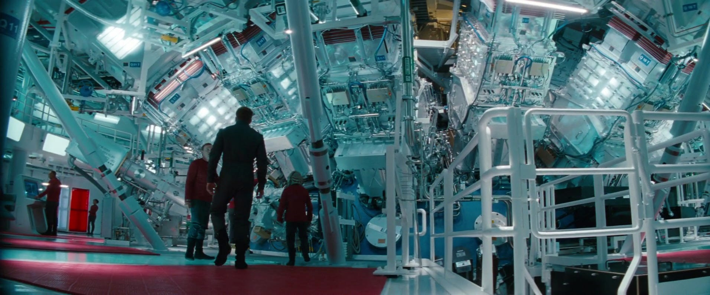
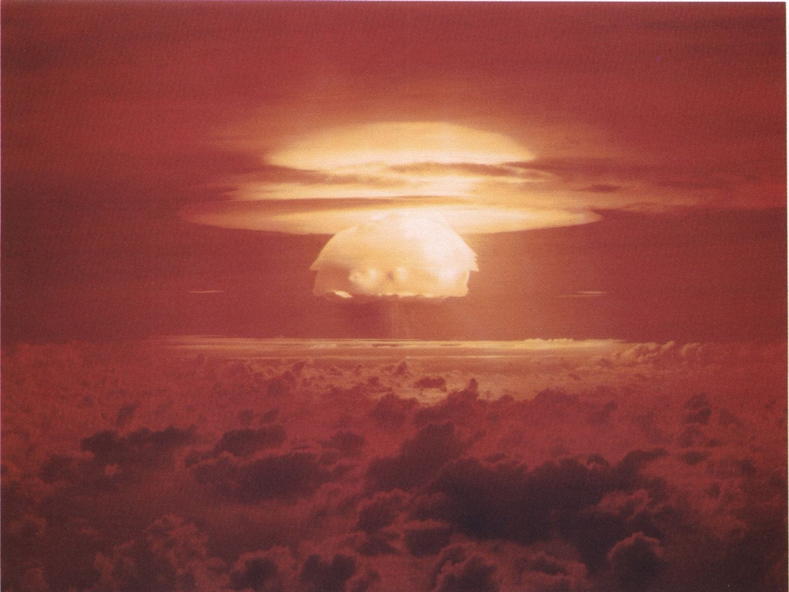

During this past week, many news outlets (including the New York Times , The Late Show with Stephen Colbert , and even PitchBook News ) trumpeted a breakthrough in fusion research. The ineptly-named National Ignition Facility (NIF) at Lawrence Livermore National Laboratory reported the results of a yet-to-be-published experiment (conducted in September) that created excess energy through a thermonuclear fusion of hydrogen atoms stripped of their electrons. To give you a sense of the scale of NIF, go no further than the warp core scene from 2016’s Star Trek Into Darkness , which was shot on location:

All 192 lasers, pictured above, are focused on a target about the size of a pencil eraser:
The lasers pump some 500 TW (more than the generation capacity of the US electrical grid) into this target for 20 nanoseconds (for scale, a beam of light covers approximately 20 feet in 20 ns) in order to create conditions on Earth close to those in the Sun, where nuclear fusion reactions generate sunlight. The net yield in this experiment was estimated to be 1.1 megajoules, enough to power a 100 W lightbulb for about 3 hours.
I’m not throwing shade on this remarkable achievement in basic science! But, strictly speaking, it’s not the first time that humans have been able to generate net energy from nuclear fusion:

The net energy released in this 1954 fusion experiment was 14.8 megatons of TNT, or roughly the amount of energy needed to power all the homes in the United States for 4-5 days. The fallout of this particular experiment introduced the word “fallout” into our lexicon and directly led to the 1963 Limited Test Ban Treaty. The amount of fuel used in its design continues to be secret, but based on a few back-of-the-envelope calculations, the fuel at the core of the bomb would be about the size of a baseball if the reaction were perfectly efficient.
The thermonuclear weapon tested above gave a pretty impressive and undoubtedly transformational result, but that was nearly 70 years ago. The technical challenge hasn’t been creating energy. Instead, it’s been controlling it in a way that allows the reaction to provide a steady supply of energy—the temperatures in a thermonuclear reactor are so high that no material on Earth can contain the reaction! By contrast, conventional nuclear (fission) energy is far easier to control, and, indeed, the first operational nuclear power plant supplied electricity only six years after Hiroshima and Nagasaki.
So, why is the news bad? Well, the technical issues were summarized pretty effectively in this Science article , but it’s far worse than a rogue press officer hyping a few extra joules. Allowing reports of this very modest (but costly) result from a single lab experiment into the popular press distracts from more practical solutions. Most non-technical observers will come away with the impression, just like in the movies, that our energy problems will soon be solved by dilithium crystals or an arc reactor the size of a fist. So, politicians (and the non-technical staffers that support them) will ask, “Why should we spend the trillions of dollars needed to go ‘renewable’ when unlimited energy is just around the corner?”
Having spent several years in DC, I suspect there is a more conventional rationale for the hype. After the significant renewable energy investment in the bipartisan Infrastructure Investment and Jobs Act, the gargantuan budgets for NIF ($3.5 billion and climbing) and its international consortium-funded alternative, the International Thermonuclear Experimental Reactor (ITER, about $50 billion) are open for adjustment. Dropping the news just as Congress finishes budget negotiations provides a public firewall against budget cuts.
While such behavior is certainly understandable, it’s also despicable. I’m in favor of hope but decidedly against delusion, and this is simply promising an outcome that cannot possibly be delivered.